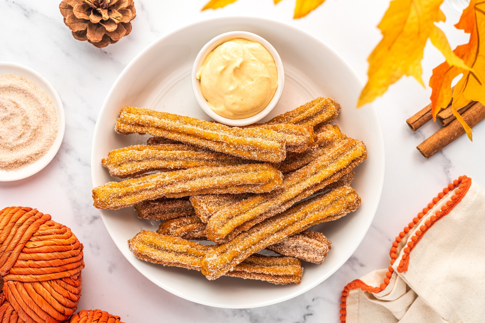

Thanksgiving Churros

Celebrate Thanksgiving with a sweet twist by making these
delectable Thanksgiving Churros. They are the perfect dessert
to add a touch of festivity to your holiday meal.
Ingredients
- 1 cup water
- 1/2 cup unsalted butter
- 1 cup all-purpose flour
- 1/4 teaspoon salt
- 1/4 teaspoon ground cinnamon
- 4 large eggs
- 1/4 cup granulated sugar
- 1/2 teaspoon ground cinnamon (for dusting)
- 1/4 cup granulated sugar (for dusting)
- Oil for frying
Instructions
- In a saucepan, combine water and butter. Bring to a boil, then remove from heat.
- Stir in flour, salt, and 1/4 teaspoon of ground cinnamon until the mixture forms a ball.
- Beat in the eggs one at a time until the dough is smooth.
- Heat oil in a deep fryer or a large, deep pot to 375°F (190°C).
- Spoon the churro dough into a piping bag fitted with a large star tip.
- Pipe 6-inch long strips of dough into the hot oil. Use scissors to cut the dough. Fry until golden brown.
- Combine 1/2 teaspoon of ground cinnamon and 1/4 cup of sugar. Roll the hot churros in the cinnamon-sugar mixture.
- Serve your Thanksgiving Churros warm and enjoy!